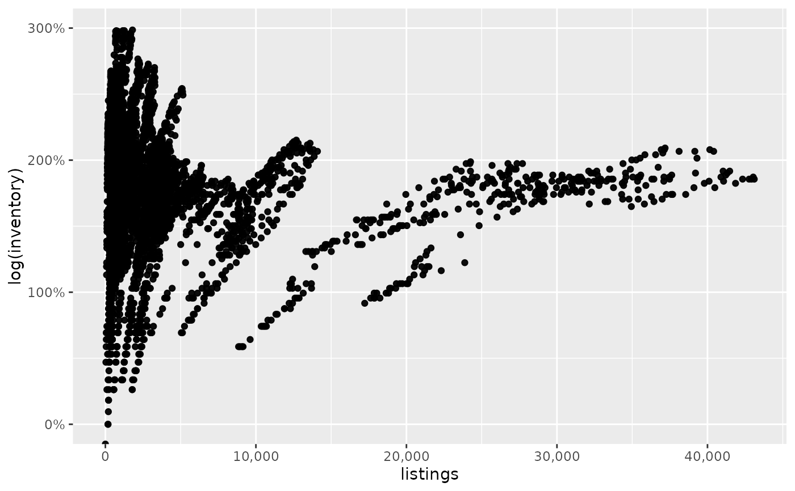

The _comma ones set comma format for axis text, the _percent
ones set percent format for axis text, _dollar for collar currency,
and _abbr for abbreviated format. Lastly, use _formatNum to
further customize your numerical scales with lares::formatNum.
scale_x_comma(...) scale_y_comma(...) scale_x_percent(...) scale_y_percent(...) scale_x_dollar(...) scale_y_dollar(...) scale_x_abbr(...) scale_y_abbr(...) scale_x_formatNum( ..., decimals = 2, type = Sys.getenv("LARES_NUMFORMAT"), pre = "", pos = "", abbr = FALSE ) scale_y_formatNum( ..., decimals = 2, type = Sys.getenv("LARES_NUMFORMAT"), pre = "", pos = "", abbr = FALSE )
Arguments
| ... | Arguments passed to |
|---|---|
| decimals | Integer. Amount of decimals to display. |
| type | Integer. |
| pre | Character. Add string before or after number. |
| pos | Character. Add string before or after number. |
| abbr | Boolean. Abbreviate using num_abbr()? You can use
the `decimals` parameter to set abbr's |
Examples
library(ggplot2) df <- ggplot2::txhousing %>% removenarows(all = FALSE) ggplot(df, aes(x = sales, y = volume)) + geom_point() + scale_x_dollar() + scale_y_abbr()# Use any argument from scale_x/y_continuous ggplot(df, aes(x = listings, y = log(inventory))) + geom_point() + scale_x_comma() + scale_y_percent(limits = c(0, 3))#> Warning: Removed 204 rows containing missing values (geom_point).# Use any argument from scale_x/y_continuous AND formatNum ggplot(df, aes(x = median, y = inventory)) + geom_point() + scale_x_formatNum(n.breaks = 3, pre = "@", abbr = TRUE) + scale_y_formatNum(position = "right", decimals = 0, pos = " X")#> Error in base::signif(x, signif): non-numeric argument to mathematical function